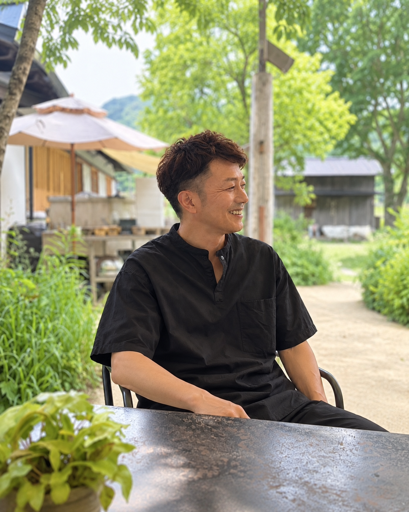

閉める前。始める前。
お金を使う前。
小さな商いの、大きな判断を一緒に考える。
BRIDGE CYCLEは、滋賀・京都の小さな事業者と「次どうする？」を考え、実際に動かす会社です。
店じまいを、まちのはじまりに。
閉める前
壊す？渡す？
始める前
持つ？試す？
お金を使う前
買う？待つ？
BRIDGE CYCLE決める前に、選択肢を増やす。
いちばん力を入れていること｜退店前承継
閉める店と、始めたい人をつなぐ。
店主「閉めようかな…」
BRIDGE CYCLE整理する｜相手を探す｜前に進める
継ぎ手「この店を継ぎたい」
継ぎ手 NEW「この店を継ぎたい」
営業中の店主へ匿名で伝える
ここから、始める。
認定経営革新等支援機関中小企業庁の認定（認定番号 109825000112）
経営支援500社超代表が商工会の経営指導員として約20年
滋賀・京都大津市を中心に、京都の周辺部まで
お金を預かりません代金は当事者どうしで直接やりとり
試す・始める・続ける・渡す。
どの段階でも、一緒に考えます。
PARTNER｜連携先の方へ
大家さん・管理会社・支援機関と、組んで進めます。
閉める店の情報は、退去の予告が出る前に動けるかどうかで結果が変わります。空室期間を短くしたい大家さん・管理会社、地域の創業を増やしたい自治体や金融機関と連携しています。
REPRESENTATIVE｜代表

中村 裕二
BRIDGE CYCLE株式会社 代表取締役
元 商工会経営指導員（瀬田商工会・大津北商工会）
元 商工会経営指導員（瀬田商工会・大津北商工会）
商工会の経営指導員として約20年、500以上の事業者の開業・承継・閉店に立ち会ってきました。失敗を避けてきた経験より、失敗を乗り越えてきた経験のほうが役に立つ。だから「失敗しない方法」ではなく、「うまくいかなくても戻れる始め方」と「壊さずに渡せる閉め方」を扱っています。
COMPANY｜会社概要
会社概要
| 会社名 | BRIDGE CYCLE株式会社 |
|---|---|
| 設立 | 2026年3月17日 |
| 代表者 | 代表取締役 中村 裕二 |
| 所在地 | 〒520-0801 滋賀県大津市におの浜2-1-28 |
| 認定 | 認定経営革新等支援機関（中小企業庁） 認定番号 109825000112 中小企業庁の認定経営革新等支援機関のページから検索して確認できます |
| 所属団体 | 膳所駅前商店街振興組合 賛助会員 |
| 事業内容 | 退店前承継（店舗の内装・設備の引き継ぎ支援）／創業・事業計画・融資申込の支援／補助金申請の支援／売り場レンタル／出張料理の仕組みづくり（うちのシェフ）／個人向け診断（わたしのこれから診断） |
| 対応地域 | 滋賀県（大津市を中心に）、京都府 |
| しないこと | 不動産の仲介、医療機器の売買、お客さま・患者さまの情報の受け渡し |
| お問い合わせ | info@bridgecycleco.com／公式LINE @907kxssd 営業のお電話はご遠慮ください。ご相談は、LINEかメールでお受けしています。 |
どこから相談すればいいか、
分からなくても大丈夫です。
閉めるか迷っている、店を始めたい、補助金を使いたい。どの段階でも、まずはLINEで一言どうぞ。代表がお返事します。